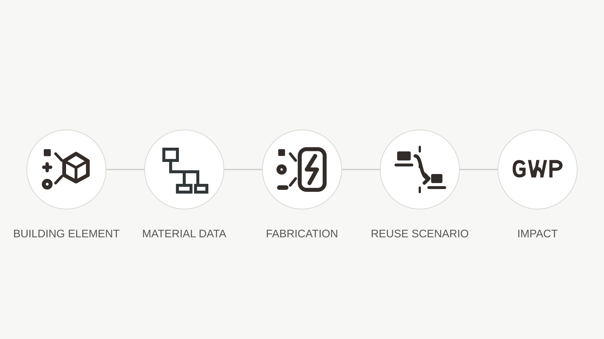

Research software / Work in progress
RAW
LCA
Connecting architectural geometry, material information and fabrication decisions to environmental impact.
RAW LCA is a Grasshopper tool in development. Its vision is to connect building elements with material data, fabrication processes and future reuse scenarios so designers can compare alternatives while they are still making design decisions.

01 / Vision
Beyond a single carbon number
The project explores environmental questions beyond carbon and material production alone. It considers how a building element is made, how long it is used, what maintenance or replacement it may require, and whether it can be recovered, reused or redirected into another material cycle.
Building elementMaterial dataFabrication processReuse scenarioImpact comparison